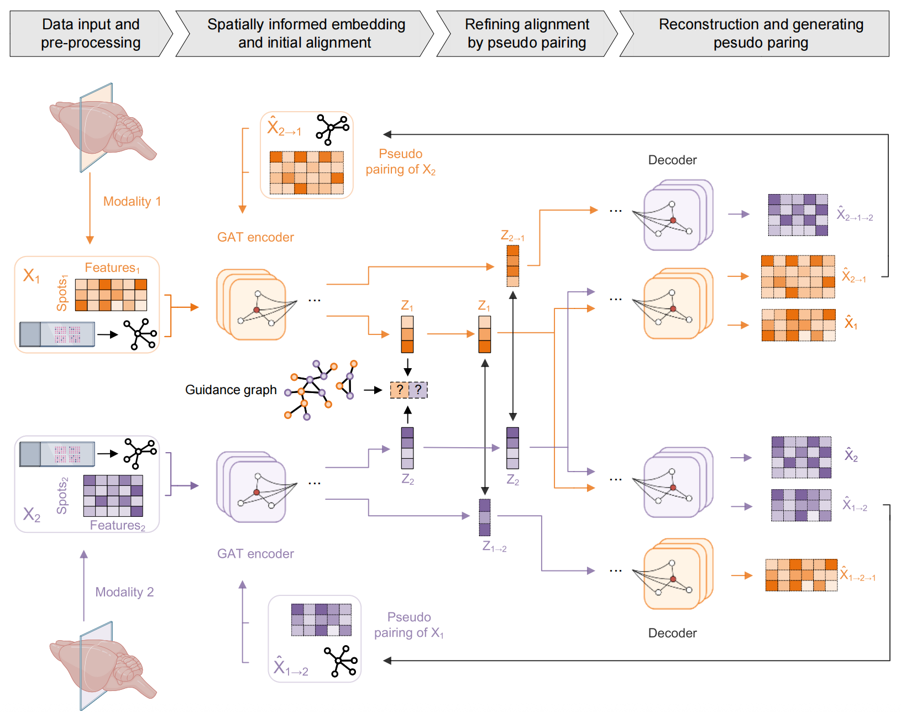

SWITCHComputer science meets life science
AI for drug discovery.
Science for better lives.
I am a Ph.D. student in Computer Science and Technology at Tongji University, supervised by Prof. Guang Chen, who leads the Generalist Embodied AI Lab.
My research focuses on AI for Science, with particular interests in drug discovery, generative models, and reinforcement learning. I study computational methods for molecular generation and interaction prediction.
I am also a research intern at XtalPi, working on antibody–antigen interaction prediction and antibody design.
Research interests
Methods & applications01
Drug discovery
Molecular generation, drug interactions, and antibody design.
02
Generative models
Learning molecular representations and generating 3D structures.
03
Reinforcement learning
Guiding molecular design through interaction and feedback.
News
Recent updates- Joined XtalPi as a research intern to work on AI antibody design.
- Received the Special Prize and Most Popular Award in the 19th Challenge Cup AI+ Special Competition.
- Our work (SWITCH) on spatial multi-omics is accepted by Nature Computational Science (NCS)!
- Our work (RCP-Bench) on collaborative perception is accepted by CVPR 2025!
Earlier updates 5
- We won the championship (1/226) in The Second Global AI Drug Development Algorithm Competition!
- Our work (AMG) on 3D structure-based molecular generation is accepted by Briefings in Bioinformatics!
- Our work on medical image segmentation is accepted by IEEE JBHI!
- Our work (Molormer) on drug-drug interaction prediction is accepted by Briefings in Bioinformatics!
- Our work on drug-drug interaction prediction is accepted by Briefings in Bioinformatics!
Selected publications
Google ScholarResearch across molecular design, scientific discovery, and visual perception.
Showing all 6 publications
No matching publications. Try another keyword or topic.
Experience
Jan 2026 — Present
Research Intern
XtalPiAilux & 抗体IDD部
Developing computational methods for out-of-distribution (OOD) antibody–antigen interaction prediction and antibody design.
Honors & awards
- 2025.10 Special Prize and Most Popular Award, 19th Challenge Cup AI+ Special Competition
- 2024.12 First Prize in the 2nd Global AI Drug Development Algorithm Competition (1/226)
- 2023.04 Outstanding Graduate of Shandong Province
- 2022.12 National scholarship for Postgraduates
Academic service
Journal reviewer
- Briefings in Bioinformatics
- IEEE Journal of Biomedical and Health Informatics
- Journal of Cheminformatics
- BioData Mining
- BMC Bioinformatics